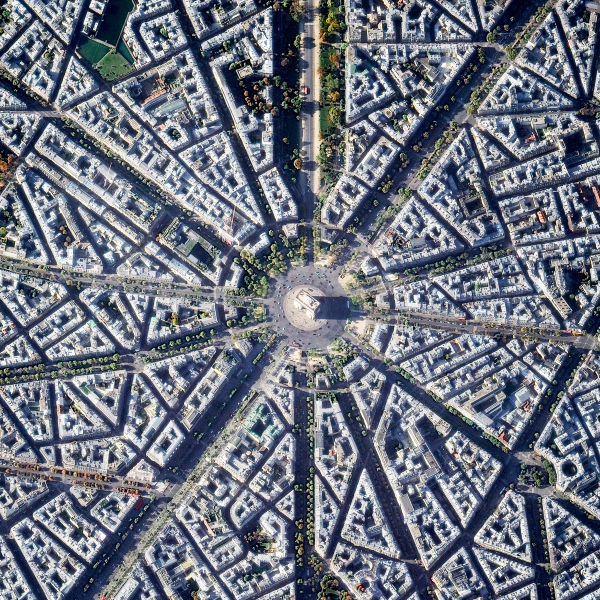

The Problem
Why Current Messaging Falls Short
Texts lack voice, create dangerous distractions, and fail without coverage.
🦇 Communication Challenges
Modern messaging faces three critical problems that VoiceBat solves with innovative technology.
Why Current Messaging Falls Short
Texts lack voice, create dangerous distractions, and fail without coverage.
Modern messaging faces three critical problems that VoiceBat solves with innovative technology.
Texts are dispassionate & dull – without the emotion & audible 'clues' contained in voices – texts can be misunderstood. Important nuances like sarcasm, urgency, or affection are lost in translation.
Texting is distracting & dangerous – especially when eyes & attention need to be focused on other things like driving, working, or walking in busy areas.
Without cell-phone coverage or WiFi – mobile messaging is nearly impossible except for expensive satellite systems. Rural areas, emergencies, and remote locations suffer.
of text messages are misunderstood
of Americans live in areas with poor cell coverage

more likely to crash while texting and driving
First responders in disaster areas lose communication when cell towers fail. Critical coordination becomes impossible when it's needed most.
Workers on job sites need hands-free communication but texting requires stopping work and looking at screens, reducing productivity and safety.
Hikers, campers, and outdoor enthusiasts venture into areas without cell coverage, losing contact with safety networks and loved ones.
VoiceBat transforms communication by adding voice & personality to messaging while eliminating coverage dependence.
Discover how Both Audio & Text (BAT) messages over LoRa networks solve these critical problems.